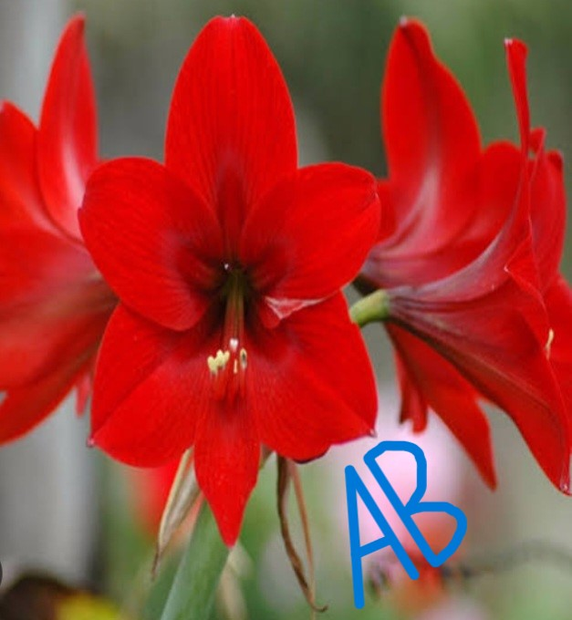
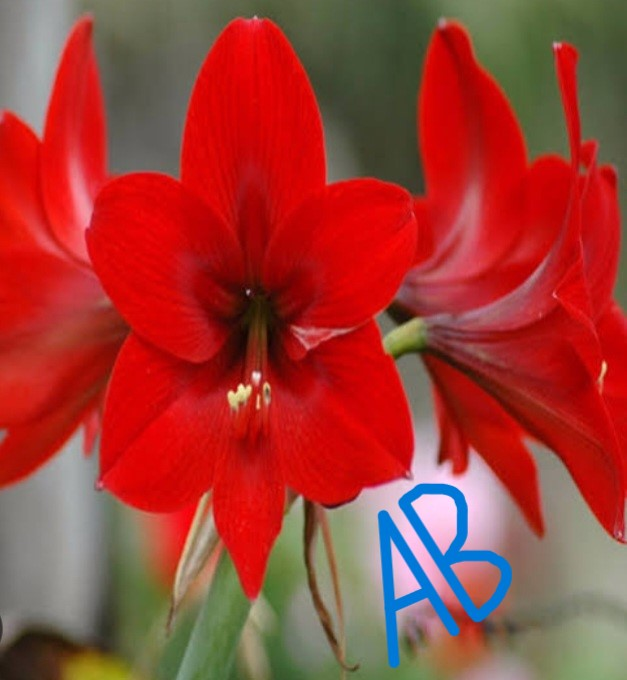
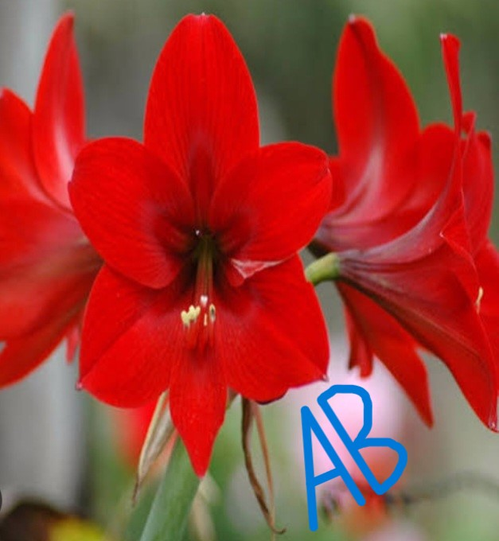

ABOUT LILY |
The lily flower is beautiful and aromatic in appearance.They are erect perennial plants wiith leafy stems,scaly bulbs,usually narrow leaves and solitary or clustered flowers.The flowers consist of six petal-like segments,which may form the shape of a trumpet,with more or less elongated tube,as in Madonna lily and Easter lily
It is noted for its beauty,aroma and shape.Its flower pedals have brownish or pinkish lines on the outside.

| BACK |